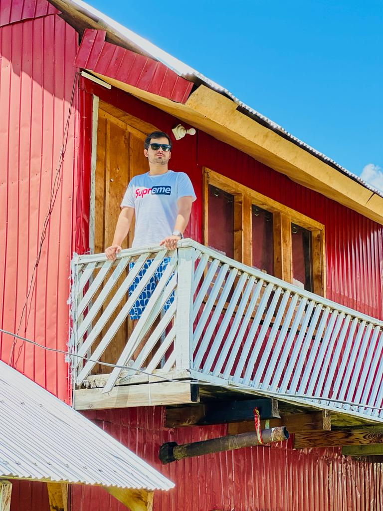

My self umar nisar i love traveling while travaled various places in pakistan. My favourite
adventure is like no other one, was the
enchanting landscapes
and vibrant beauty of kashmir. it is located in the north areas and it's road are very dangerious. kashmir is a paradise for
nature lovers and a haven for those seeking a deep dive into the traditions of the region.
Picture yourself surrounded by towering peaks, where the air is crisp, and the scenery is nothing short of awe-inspiring.
Beyond the natural wonders,
kashmir isn't just a feast for the eyes; it's a celebration of diverse cultures. The region is home to a mosaic of ethnicities, each contributing to the vibrant tapestry of traditions.
Immerse yourself in local festivities, and engage with the warm and welcoming communities that call home of love and peace.
it's in the genuine smiles of the locals. Experience true hospitality as you interact with the friendly people, share stories, and perhaps, partake
in a cup of traditional chai in a local tea house.
|  |